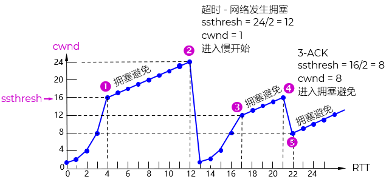
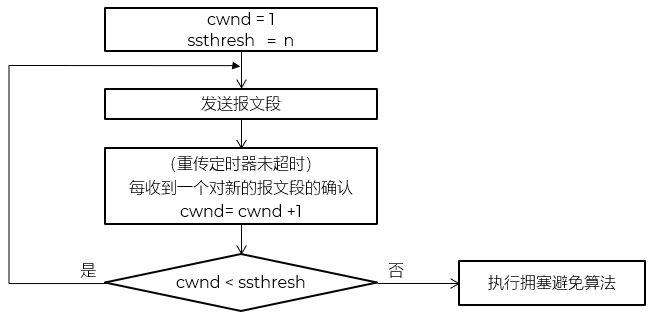
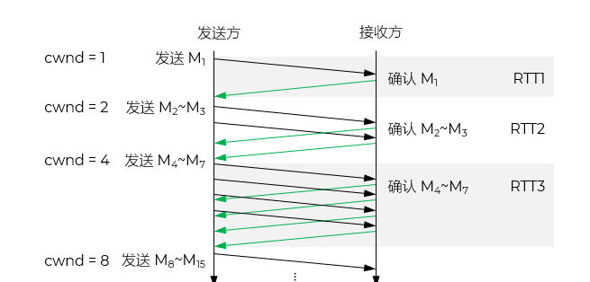
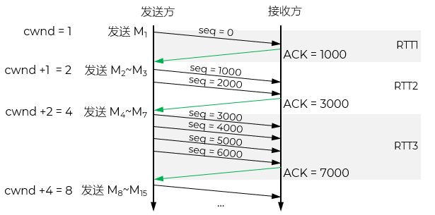
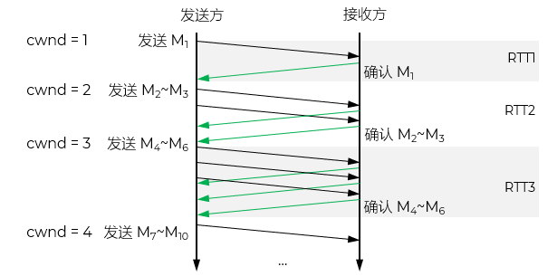
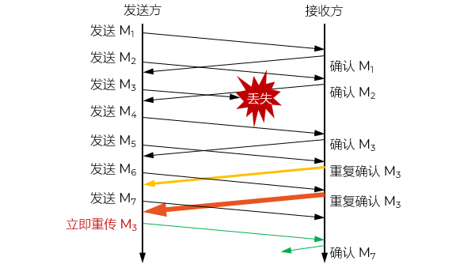
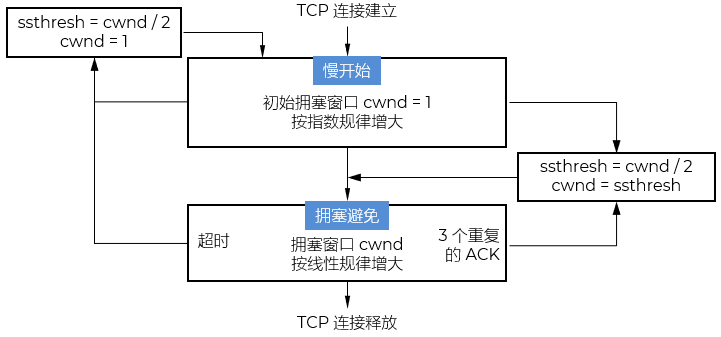

| 资源层面 | 带宽不足、缓冲区有限、处理能力瓶颈 |
| 流量层面 | 流量突发、非适应性流（如UDP flood）、多流汇聚 |
| 协议/机制层面 | 缺乏拥塞控制、ACK机制缺陷、路由策略不当 |
| 行为层面 | 用户贪婪行为、恶意攻击、应用设计缺陷 |
| 拥塞控制 | 防止过多的数据注入到网络中，避免网络中的路由器或链路过载
涉及所有主机、路由器以及与降低网络传输性能有关的所有因素 全局性：面向公共资源、面向过程 示例：高速公路限流、单双号通行、工作人员限流放人进厕所 |
| 流量控制 | 抑制发送端发送数据的速率，以使接收端来得及接收
点对点通信量的控制，是个端到端的问题 局部性：面向个体、面向终端 示例：停车场满、厕所门显示占用 |
供需不平衡：供 < 需
增加资源
重传资源
网络上的流量要少
让发送方/源站根据网络状态动态调整发送速率
依靠 预先设定 的规则进行流量管理
流水线生产
单双号通行
人不能两次踏进同一条河流 - 古希腊哲学家赫拉克利特 Heraclitus
世上没有两片完全相同的叶子 - 德国哲学家莱布尼茨 Gottfried Wilhelm Leibniz
检测：监测网络系统，检测拥塞在何时、何处发生
传送/反馈：将拥塞发生的信息传送到可采取行动的地方/源站 - 控制的核心
调整：调整网络系统的运行以解决出现的问题
洗澡
开车
在 IP 头部和 TCP 头部保留特定比特（如ECT、CE位）
当路由器检测到拥塞（如队列过长），不丢包，而是将转发的分组中的CE（Congestion Experienced）位设为1
接收方收到该分组后，在 ACK 中告知发送方网络曾拥塞
发送方据此降低发送速率
优点：避免丢包作为拥塞信号，提高效率；适用于支持 ECN 的端系统和网络设备
传统 TCP 机制 如 Reno、Cubic
路由器在缓冲区满时直接丢弃分组
发送方通过 超时重传或重复ACK 推断网络拥塞
于是执行拥塞避免算法，如慢启动、拥塞窗口减半
缺点：反应滞后，且丢包本身浪费带宽
seq = 1000
seq = 2000
seq = 3000
seq = 4000
seq = 2000
seq = 3000
seq = 4000
ACK = 1, seq = 1000
某些协议或应用层机制会定期发送小量探测包，如 ping、RTT 测量包
通过分析 RTT 增长、丢包率上升等指标，判断是否发生拥塞
例如：QUIC 协议、某些拥塞控制算法（如 BBR ）会利用带宽和 RTT 估计网络状态
这种方式更主动，但可能增加额外开销
网络已经出现了拥塞
预示网络可能会出现拥塞

当 cwnd ≤ ssthresh 时，使用慢开始算法
当 cwnd > ssthresh 时，停止使用慢开始算法，改用拥塞避免算法
当 cwnd = ssthresh 时，既可使用慢开始算法，也可使用拥塞避免算法

TCP 通过每个被确认的段来驱动 cwnd 增长，而不是每个 ACK 报文
即使只收到一个累计 ACK，只要它确认了 k 个新段，cwnd 就增加 k 个 MSS


让拥塞窗口 cwnd 缓慢地增大，避免出现拥塞

慢开始门限 ssthresh = max (cwnd/2，2)
拥塞窗口 cwnd = 1
立即触发阶段3 快重传，重传丢失分组
紧接着进入阶段4 快速恢复，而非回到慢开始

慢开始门限 ssthresh = cwnd / 2
新拥塞窗口 cwnd = ssthresh

| 阶段 | 触发条件 | cwnd 增长方式 | 目的 |
|---|---|---|---|
| 1. 慢开始 Slow Start |
初始或超时后 | 每 RTT 翻倍/指数增长 | 快速探测可用带宽 |
| 2. 拥塞避免 Congestion Avoidance |
cwnd ≥ ssthresh | 每 RTT 增加 1/cwnd/线性增长 | 谨慎增加负载 |
| 3. 快重传 Fast Retransmit |
收到 3 个重复 ACK | 立即重传丢失段 | 避免等待超时 |
| 4. 快速恢复 Fast Recovery |
快重传之后 | cwnd = ssthresh 每收到一个重复 ACK 加 1，直到新 ACK 到达 |
在不降速到 1 的情况下恢复传输 |
避免频繁做乘除运算
发送时按“段”处理，天然以 MSS 为粒度
拥塞控制算法（如慢启动：每 RTT 翻倍 cwnd）在“段数”层面更直观
接收窗口是字节
应用层数据是字节流
流量控制和拥塞控制的交集必须单位统一